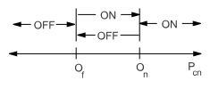
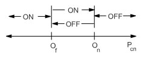
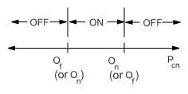
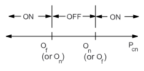

| Matrix or Vector | Shape Functions | Integration Points |
|---|---|---|
| Stiffness Matrix | None (nodes may be coincident) | None |
| Mass Matrix | None (lumped mass formulation) | None |
| Damping Matrix | None | None |
COMBIN37 is a nonlinear, 1-D element with two active nodes and one or two control nodes. The element has spring-damper-sliding capability similar to COMBIN40. The degree of freedom (DOF) for the active nodes is selected using KEYOPT(3) and the DOF for the control nodes is selected using KEYOPT(2).
The action of the element in the structure is based upon the value of the control parameter (Pcn) (explained later), On and Of (input as ONVAL and OFFVAL on R command), and the behavior switches KEYOPT(4) and (5). Figure 13.1: Element Behavior illustrates the behavior of one of the more common modes of operation of the element. It is analogous to the normal home thermostat during the winter.
The behavior of all possible combinations of KEYOPT(4) and (5) values is summarized in the following table. Pcn represents the control parameter (output as CONTROL PARAM). The element is active where the figure indicates on, and inactive where it indicates off. For some options, the element may be either on or off for Pcn between On and Of, depending upon the last status change.
|
KEYOPT(4) = 0, KEYOPT(5) = 0, Of
|
KEYOPT(4) = 0, KEYOPT(5) = 0, Of > On:  |
|
KEYOPT(4)
= 0, KEYOPT(5) = 1, Of
|
KEYOPT(4) = 0, KEYOPT(5) = 1, Of > On: [1] |
|
KEYOPT(4) = 1, KEYOPT(5) = 0:  |
KEYOPT(4) = 1, KEYOPT(5) = 1:  |


Analogous to Figure 13.1: Element Behavior
When the element status is ON, the element matrices are:
(13–37) |
 | (13–38) |
(13–39) |
where:
| ko = stiffness (input as STIF on R command) |
| MI = mass at node I (input as MASI on R command) |
| MJ = mass at node J (input as MASJ on R command) |
| Co = damping constant (input as DAMP on R command) |
When the element status is OFF, all element matrices are set to zero.
If KEYOPT(6) > 0, a real constant is to be adjusted as a function of the control parameter as well as other real constants. Specifically,
(13–40) |
(13–41) |
(13–42) |
(13–43) |
 | (13–44) |
(13–45) |
(13–46) |
(13–47) |
where:
| FA = element load (input as AFORCE ON R command) |
| FS = slider force (input as FSLIDE on RMORE command) |
| C1, C2, C3, C4 = input constants (input as C1, C2, C3, and C4 on RMORE command) |
| Pcn = control parameter (defined below) |
| f1 = function defined by subroutine USERRC |
If (or FS, if KEYOPT(6) ≠ 8) is less than zero, it is reset to zero.
The control parameter is defined as:
(13–48) |
where:
| t = time (input on TIME command) |
| u = degree of freedom as selected by KEYOPT(2) |
The assumed value of the control parameter for the first iteration ( ) is defined as:
(13–49) |
where:
| St = constant defining starting status where: 1 means ON, -1 means OFF (input as START on R command) |
| TUNIF = uniform temperature (input on BFUNIF command) |